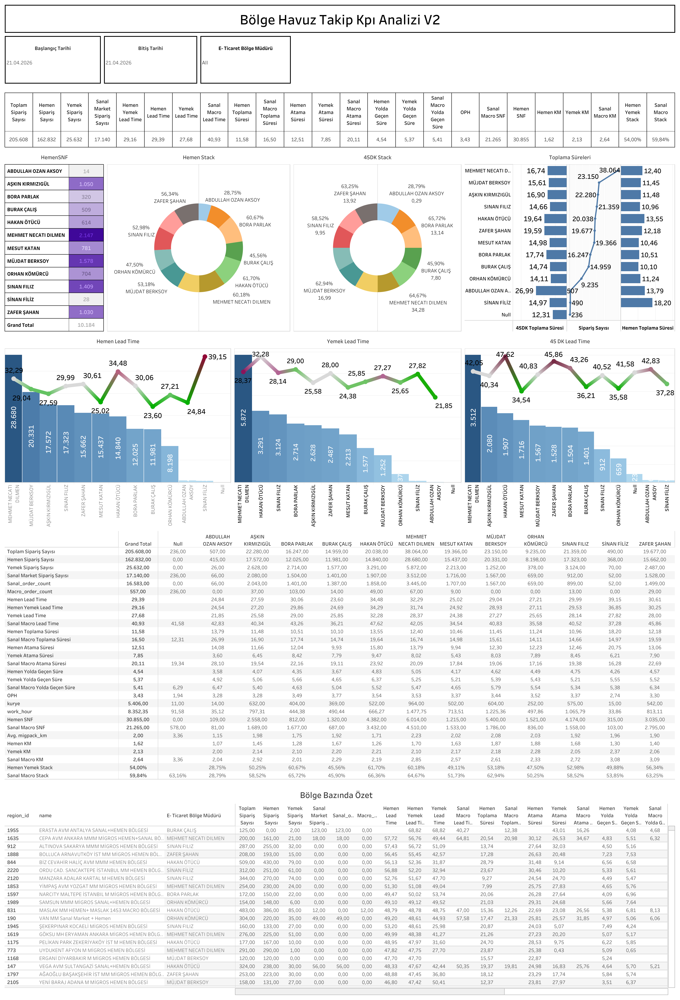

Canlı Rapora Erişin
Güncel V2 KPI verilerini Tableau üzerinde interaktif olarak görüntüleyin.
Dashboard Hakkında
Ne Gösterir?
V2 versiyonu; Hemen, Yemek, Sanal Market ve Macro kanallarını kapsayan genişletilmiş sipariş analizi sunar. İlk versiyona ek olarak Sanal Market sipariş sayıları, Macro lead time ve bölge müdürü bazında çapraz kanal karşılaştırması içerir.
- Çoklu Kanal Sipariş Analizi: Hemen, Yemek, Sanal Market ve Macro sipariş sayıları tek tabloda
- Genişletilmiş Lead Time: Hemen, Yemek, Sanal & Macro lead time eğrileri karşılaştırmalı
- Toplama & Atama Süreleri: Sanal ve Macro toplama süresi ile atama süreleri ayrıştırılmış halde
- Stack Analizi: Hemen ve 45DK stack oranları bölge müdürü bazında pasta grafikler
- Bölge Bazında Özet: Tüm kanalları kapsayan bölge müdürü bazında özet tablo
Dashboard Önizleme

Bölge Havuz Takip KPI Analizi V2 — Tableau